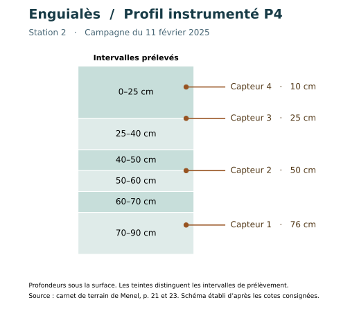

Résidus miniers d’Enguialès
De la campagne de terrain aux essais de lixiviation.
Sur l’ancien site minier d’Enguialès, j’ai étudié la mobilité de l’arsenic et du fer dans des résidus miniers. Mon stage au laboratoire GEOPS a associé une campagne de prélèvements et d’instrumentation à des essais de pluie simulée en laboratoire.
Sur le terrain · 11 février 2025
Le 11 février 2025, j’ai participé à l’instrumentation du site et consigné la position des prélèvements, les profondeurs des capteurs et les conditions rencontrées. Au point P3, l’équipe a atteint la roche vers 20 cm. Nous avons déplacé le profil de quelques mètres. Au nouvel emplacement, P4, nous avons pu échantillonner le sol jusqu’à 90 cm et installer quatre capteurs. Le carnet conserve à la fois la raison du déplacement et les profondeurs retenues.

La station était configurée pour enregistrer toutes les cinq minutes la teneur en eau du sol, sa température et sa conductivité. Les capteurs à 25 et 50 cm coïncident avec des limites de prélèvement : un détail à conserver pour interpréter leurs mesures.
Consulter les profondeurs de prélèvement et des capteurs
| 0–25 cm |
| 25–40 cm |
| 40–50 cm |
| 50–60 cm |
| 60–70 cm |
| 70–90 cm |
| Capteur | cm |
|---|---|
| Capteur 4 | 10 cm |
| Capteur 3 | 25 cm |
| Capteur 2 | 50 cm |
| Capteur 1 | 76 cm |
Du tube au résultat
À ENG31, le carnet associe l’identifiant du point aux mesures sur l’eau et à trois tubes de 15 mL d’eau filtrée à 0,45 µm, destinés aux analyses de cations, d’anions et d’éléments mineurs ou traces.
| Point | pH | Conductivité (µS/cm) |
|---|---|---|
| ENG31 | 3,22 | 906 |
| Exhaure | 3,17 | 1 128 |
Ces mesures caractérisent les conditions de prélèvement. La conductivité renseigne globalement sur les ions en solution ; l’étude du fer et de l’arsenic repose sur leurs dosages spécifiques dans les essais de laboratoire.
Au laboratoire · Comparer les résidus
J’ai comparé trois résidus soumis à six cycles de pluie simulée, en suivant la chimie des eaux de lixiviation. L’intérêt de cette expérience était d’examiner comment le type de résidu et la succession des apports d’eau influencent le relargage des éléments étudiés.
Les travaux comprenaient aussi des essais de battement de nappe et de lixiviation de résidus indurés (hardpans) sur cinq cycles chacun, ainsi que les protocoles statiques EN 12457-2, NAG et TCLP. Le suivi associait pH, conductivité, chromatographie ionique et absorption atomique pour le fer et l’arsenic.
Le traitement des séries temporelles et l’interprétation d’images MEB et de résultats DRX ont alimenté la synthèse. J’ai présenté ce travail à l’oral et sous forme de poster.